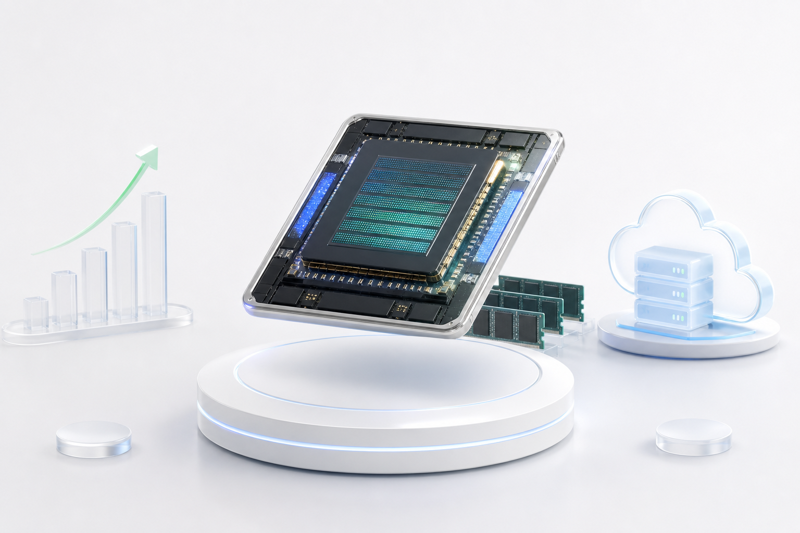

삼성전자 최근 30일 동향
1분기 실적, HBM4 기대, 노사 리스크 완화가 만든 30일 가격 흐름
2026-05-26

개요
2026년 4월 27일부터 2026년 5월 26일까지 삼성전자(005930.KS) 종가는 224,500원에서 299,000원으로 +33.18% 상승했습니다. 이 구간에는 한국거래소 기준 19개 거래일이 포함됩니다.:<div class="stat-card stat-card--up"><div class="stat-card__label">30일 종가 변화</div><div class="stat-card__title">2026-04-27 → 2026-05-26</div><div class="stat-card__value">+33.18%</div><div class="stat-card__compare">224,500원 → 299,000원</div></div>
구간 최저 종가는 2026년 4월 30일 220,500원, 최고 종가는 2026년 5월 21일 299,500원이었습니다. 2026년 5월 26일에는 종가 299,000원, 장중 고가 302,000원으로 마감했습니다.
삼성전자 2026년 4월 27일부터 2026년 5월 26일까지 일별 종가 추이
배경
이번 30일 흐름의 출발점은 2026년 1분기 실적 발표였습니다. 삼성전자는 연결 기준 매출 133.9조원, 영업이익 57.2조원을 발표했고, 회사는 이를 역대 최대 분기 매출과 영업이익으로 설명했습니다.
특히 DS 부문은 매출 81.7조원, 영업이익 53.7조원을 기록했습니다. 회사는 AI 고부가가치 제품 판매 확대와 메모리 가격 상승을 주요 배경으로 제시했습니다.
이 흐름에서 중요한 점은 주가가 실적 발표일에 바로 직선적으로 움직인 것이 아니라는 점입니다. 2026년 4월 30일 종가는 220,500원으로 리서치 구간의 최저 종가였고, 이후 AI 메모리 기대가 더 강하게 가격에 반영되었습니다.
메커니즘
주가 상승의 첫 번째 메커니즘은 메모리 실적과 AI 제품 기대의 결합입니다. IR 자료는 HBM4와 SOCAMM2 양산 판매가 NVIDIA Vera Rubin 플랫폼용으로 시작됐다고 설명했고, DDR5, SOCAMM2, PCIe Gen6 eSSD 같은 고부가 제품 중심 전략을 제시했습니다.
두 번째 메커니즘은 HBM4 로드맵의 가시성입니다. 삼성전자 글로벌 뉴스룸은 HBM4 양산과 상업 출하를 발표하며, 일관 처리 속도 11.7Gbps, 최대 13Gbps, 단일 스택 최대 대역폭 3.3TB/s를 제시했습니다. 또한 2026년 HBM 매출이 2025년 대비 3배 이상이 될 것으로 예상한다고 밝혔습니다.
세 번째 메커니즘은 공급 리스크의 완화입니다. Reuters는 삼성전자 노조가 18일간의 파업 계획을 잠정 중단했고, 약 48,000명의 조합원이 잠정 합의안을 표결할 예정이라고 보도했습니다. 표결 일정은 2026년 5월 22일부터 5월 27일까지로 제시됐습니다.
뉴스 100건 점검
토스증권 삼성전자 뉴스 탭의 최신순 100건을 분류하면, 가장 많이 반복된 묶음은 시장·반도체 랠리 30건, 노사·성과급·임금 19건, 정책·지역·반도체 클러스터 16건, 환율·거시·자금 흐름 11건, 기타 9건 순서였습니다. 이 표본은 2026-05-26 16:31부터 2026-05-26 21:31까지의 뉴스 흐름을 담고 있습니다.
뉴스에서 가장 많이 나온 말을 워드 클라우드로 보면, 아래 단어들이 반복 빈도에 따라 크게 표시됩니다. 단어 빈도 원자료는 output/assets/samsung-electronics-recent-30d-2026-05-toss-news-analysis100.json에 저장했습니다.
경제리포트 해석에서는 100건 전체를 세 가지로 압축합니다. 첫째, 노사·성과급 뉴스는 파업 우려 완화와 비용 부담을 동시에 보여줍니다. 둘째, 코스피 8,000선과 반도체 랠리 뉴스는 삼성전자가 지수 상승의 핵심 축이었음을 보여줍니다. 셋째, 화웨이·중국 반도체 자립 뉴스는 HBM4 기대와 별개로 중장기 경쟁 리스크를 남깁니다.
프리마켓 급락·주문실수 관련 뉴스는 실제 정규장 종가 흐름과 분리해야 합니다. 리서치 기준 삼성전자의 2026년 5월 26일 정규장 종가는 299,000원이었고, 장중 고가는 302,000원이었습니다.
투자자별 매매 동향
토스증권 투자자별 매매 동향 기준 2026년 4월 27일부터 2026년 5월 26일까지 누적 순매수는 개인 +27,172,885주, 외국인 -47,568,685주, 기관 +19,764,281주였습니다. 즉 30일 누적으로는 외국인이 판 물량을 개인과 기관이 상당 부분 받아낸 구조였습니다.
반면 마지막 거래일인 2026년 5월 26일 하루만 보면 개인은 -4,549,651주 순매도, 외국인은 +2,548,451주 순매수, 기관은 +2,167,651주 순매수였습니다. 이 날 299,000원 종가 회복은 외국인·기관 순매수와 함께 해석할 수 있습니다.
삼성전자 2026년 4월 27일부터 5월 26일까지 투자자별 누적 순매수
영향과 적용
가격 측면에서는 변동성이 컸습니다. 종가 대비 종가 기준 가장 큰 상승일은 2026년 5월 6일 +14.41%였고, 가장 큰 하락일은 2026년 5월 15일 -8.61%였습니다. 일간 종가 수익률 표준편차는 5.10%였습니다.
이 구간을 해석할 때는 “강한 실적”과 “강한 주가”를 단순히 같은 말로 보면 안 됩니다. 1분기 실적은 배경이고, 5월 가격 움직임은 HBM4, AI 인프라 투자, 메모리 공급, 노사 리스크 완화가 함께 만든 기대의 재가격화로 볼 수 있습니다.
다만 노사 합의안은 표결과 비용 구조 변수가 남아 있었습니다. Reuters는 보너스 산정·분배 조건과 장기 지급 조건을 언급했으므로, 단기 공급 차질 우려 완화와 장기 비용 부담 가능성을 분리해서 봐야 합니다.
References
- Samsung Newsroom Korea, “삼성전자, 2026년 1분기 실적 발표,” 2026-04-30. https://news.samsung.com/kr/%EC%82%BC%EC%84%B1%EC%A0%84%EC%9E%90-2026%EB%85%84-1%EB%B6%84%EA%B8%B0-%EC%8B%A4%EC%A0%81-%EB%B0%9C%ED%91%9C
- Samsung Investor Relations, “Samsung Electronics 1Q 2026 Earnings Presentation,” 2026-04-30. https://images.samsung.com/is/content/samsung/assets/global/ir/docs/2026_1Q_conference_eng.pdf
- Samsung Global Newsroom, “Samsung Ships Industry-First Commercial HBM4 With Ultimate Performance for AI Computing,” 2026-02-12. https://news.samsung.com/global/samsung-ships-industry-first-commercial-hbm4-with-ultimate-performance-for-ai-computing
- Twelve Data, “Samsung Electronics Co., Ltd. (005930) Historical data,” accessed 2026-05-26. https://twelvedata.com/markets/150300/stock/krx/005930/historical-data
- Reuters via StreetInsider, “Samsung union suspends planned strike after reaching tentative pay deal,” 2026-05-20. https://www.streetinsider.com/Reuters/Samsung%2BElec%2C%2Bunion%2Bbegin%2Beleventh-hour%2Btalks%2Bto%2Bavert%2Bhuge%2Bstrike%2C%2Bstuck%2Bon%2Ba%2Bkey%2Bissue/26523418.html
- yfinance local data pull,
005930.KS1d, 2026-04-27~2026-05-26; saved tooutput/assets/samsung-electronics-recent-30d-2026-05-price-chart-v1.json. - Toss Securities, “삼성전자 투자자별 매매 동향,” accessed 2026-05-26. https://www.tossinvest.com/stocks/A005930/transaction-status
- Toss Securities, “삼성전자 뉴스 최신순 100건,” accessed 2026-05-26. https://www.tossinvest.com/stocks/A005930/news